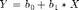
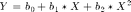

Regression
Simple and Multivariate Linear Regressions
Contents
Reasoning Behind Regression
Regression is performed to fit a curve to a set of data, typically by minimizing the distance between the curve and the datapoints. We have not focued on the math behind regression in this class, but mostly on calculation, so that will be the main focus of this page. In the outputs, you will be looking for significant coefficients for each variable in the output and a high R-squared value to show that the model fits the data well.
Simple Linear Regression
This is not much more than what has been done in other classes. At its most basic level, it is fitting the slope to linear data and finding a y-intercept. Cubic, quadratic, exponential and other methods can be used, but it is all about finding the coefficients for each variable that most minimizes the sum of squared errors when performing the regression. At their most basic (linear and quadratic), these regressions take the forms below.


Multivariate Linear Regression
This is the case where there is more than one dependent variable being regressed for. These can be found in SPSS under Analyze -> General Linear Model -> Multivariate. The dependent entries will be your dependent variables and the independent variables will go in the covariates box this time.
Stepwise Regression
The stepwise regression option in the general linear model tool in SPSS has the option to set a stepwise regression mode in a small dropdown box underneath the input area for the independent variables. The stepwise function will try different combinations, adding and removing variables until the best fit is achieved.
Interaction
To attempt to find better results for your regression it may be possible to have your variables interact. This means that you multiply them in combinations and regress with them to find a coefficient and hope that they increase the fit of the model. A two-way regression would be to multiply each variable together in sets of two, and three-way would be the same, with each combination of variables multiplied in groups of three.
MATLAB® Functions
lm = fitlm(tbl) will accept a table of values and headers and run a linear regression on it. You can set the type or specify which variables to use by putting a comma after tbl and either entering in quotation marks the type (e.g. 'linear') or write in quotes ('Dep~1+Indep1+Indep2') to specify the model to your desired output. b = stepwisefit(X,y) will run a stepwise regression, with X being the independent variables and y being dependent variables.